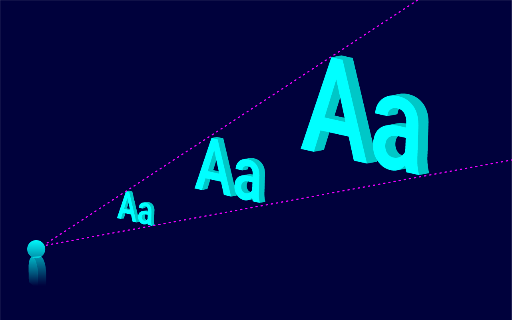
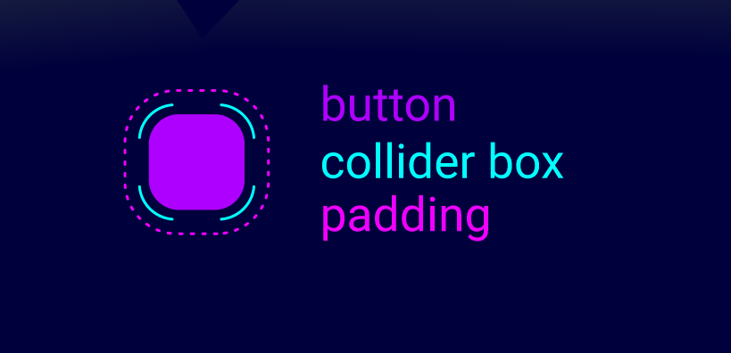

UI Elements
Typography
A moving environment brings many challenges for readability, similar to when reading in a car. We have collected some recommendations to help you avoid common mistakes.

Designing for holoride’s 2D stage is similar to designing billboards or a poster, the same readability rules apply.
- Font styles should be minimal and comfortable for holoride and fit within the regular VR guidelines. We always recommend challenging and testing them for yourself.
- Sans serif fonts are generally more legible in a digital space. In addition, we recommend against using thin and lightweight fonts, as they cause a lot of antialiasing. In some cases, increasing kerning can also help improve legibility.
- Line length should be based on simple ergonomics and comfortably fit into the user’s FOV. If you have to use bigger blocks of text, we advise using shorter line lengths that don’t require the user to move their head in order to read everything.
Button Specs
Because of unpredictable driving conditions, designing and placing buttons or any other interactive UI elements could be a challenging task. Due to gaze-and-click interactions, we recommend making collider boxes of these elements at least 20% bigger than the element itself.

To help give you some reference points to start from, here are some values that worked for holoride. These values are true for a screen that was 3.05 meters away.
- Minimum button size is 68x68 pixels (in this case we recommend adding a bigger collider box and some padding to prevent misclicks).
- Minimum padding is 15px (but in general we recommend using bigger spacings if possible).
UI Animations (Interaction Animations)
For UI motion design, we recommend a subtle approach. UI animations that have a lot of motion on the X and Y axes or the Z axis, which could intersect with the vehicle volume movement, can cause user discomfort and motion sickness.
Next Step: Motion Sickness Guidelines